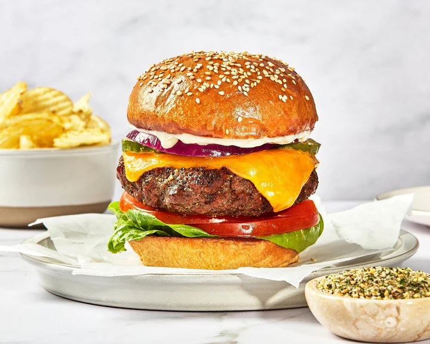

A cheeseburger is a classic American favorite made with a juicy beef patty, melted cheese, and fresh toppings served on a soft toasted bun.
Known for its rich flavor and endless customization options, the cheeseburger is a satisfying meal that can be enjoyed at backyard barbecues,
family dinners, or casual gatherings.
This recipe starts with seasoned ground beef formed into patties and cooked until perfectly browned. A slice of cheese is melted over each
patty before it is assembled on a toasted bun with toppings such as lettuce, tomato, onion, pickles, and your favorite condiments.
The result is a flavorful and hearty burger that is simple to make and always a crowd-pleaser.
Voila, there you have it. Enjoy your delicious food!